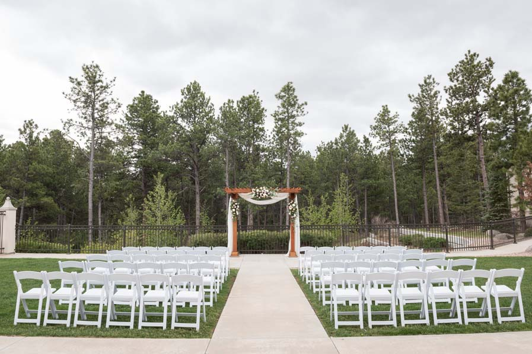
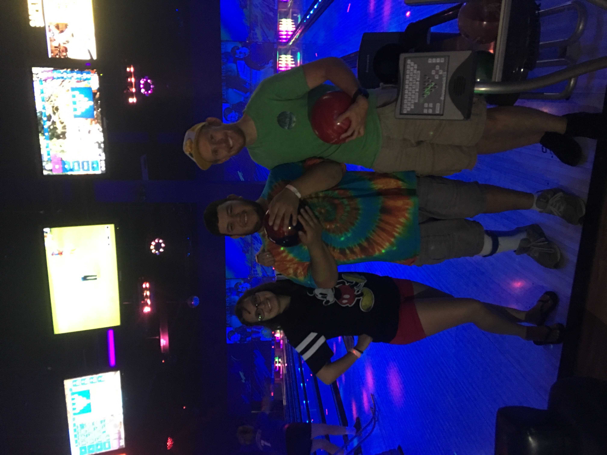

Welcome to Colorado! We know your time in Colorado may be limited, but here are a few highlights of our state.
We hope you enjoy our great state and maximize your time while you are here. First we'll show you all the important points of interest for our special day, along with some fun attractions Colorado has to offer in the area! This map is used for general spatial reference, formal invitations outlining the details each wedding event will be sent in mid-June.
Traveling anywhere can be taxing, but luckily Colorado has many great airports to choose from for our out of town guests. While Colorado Springs Airport (COS), is the closest airport to the wedding venue, flights from Denver International Airport (DIA) are usually cheaper and offer more direct flights.
We are very excited to spend our special day with you!! Our ceremony and reception are at this location. 
Our rehearsal dinner will be taking place at Bass Pro Shops in Colorado Springs. The rehearsal dinner is casual attire, and food is buffet style. Invited guests can relax the night before the wedding while browsing the inside of the store or enjoy an ocean theme bar and bowling alley.

Don't worry about the fact there is no hotel in this aerial view, because the hotel was finished being built in May and google has not updated their imagery yet.
Jacob's best man was nice enough to book a six bedroom air bnb for the groomsman and their wives. The air bnb is booked through August 16th - 19th.
Cheyenne is America's only zoo that is built in the side of a mountain. If you love visiting zoos, and you are looking for a unique experience Cheyenne Mountain Zoo does not disappoint.
We hope you enjoyed our map of Colorado and we thank you for being a part of our special day.